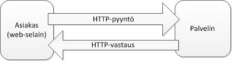

Web
World Wide Web
World Wide Web (WWW, Web) on web-resurssien muodostama verkko.
Kaikilla web-resurssieilla on oma URL (Uniform Resource Locator), joka määrittää resurssin sijainnin.
URL:n perusteella web-resurssi voidaan saavuttaa käyttäen Internetin päällä toimivaa HTTP-protokollaa.
Usein web-resursseja käsitellään web-selaimella (Chrome, Firefox, IE, ym.), mutta muitakin tapoja on.
Webin historiaa
1969: ARPANET
- Internetin edeltäjä
1983: TCP/IP
- Internetin tiedonsiirtoprotokolla
1989: World Wide Web
- HTTP, HTML
1994: CSS
- Kieli web-sivujen tyylin määrittelyyn
1995: JavaScript
- Web-selainten ohjelmointikieli
1998: Ajax
- Monipuolisempi selain-palvelin-kommunikaatio
2011: HTML5
- Joukko erilaisia web-teknologioita
Web-sovellusten historiaa
1990-luku
- Suurelta osin staattisia HTML-sivuja
- Esim. http://www.cs.tut.fi/~seitti/
- "Web 1.0"
2000-luku
- Dynaamisia web-sovelluksia
- Käyttäjien luomaa sisältöä
- Esim. http://www.wikipedia.org
- "Web 2.0"
2010-luku
- HTML5, työpöytäsovelluksen tasoinen käyttäjäkokemus
- Semanttinen web, Mashupit, ...
- Esim. http://play.spotify.com
- "Web 3.0"
Web-sovellus
- en.wikipedia.org:
Web application is a client-server software application in which the client (or user interface) runs in a web browser.
Web-sivu vs web-sovellus
Web-sivu: käyttäjä hakee tietoa
- esim. http://www.tut.fi
Web-sovellus: käyttäjä suorittaa toimintoja
- esim. http://www.tut.fi/pop
Rajanveto epätarkkaa
Web-sovellusten hyötyjä
Käytettävissä kaikkialla
- Alustariippumaton
- Ainut vaatimus on moderni web-selain
Sovellusten päivittäminen helppoa
Turvallisempi suorittaa kuin natiivi sovellus
- Web-selaimen "hiekkalaatikko"
Web-sovellusten haittoja
Käyttäjäkokemus?
Käyttö vaatii verkkoyhteyden
Omanlaisensa tietoturvaongelmat
- Sovellus koko maailman saavutettavissa
Sovellusten kehitys
- Teknologiarajoitteet
- Web-selainten erot ym.
Kaikki nämä ongelmat ovat vähenemään päin web-teknologioiden kehittymisen myötä.
Web-sovelluksen arkkitehtuuri

Web-sovelluksen karkea arkkitehtuuri:
- Asiakaspää (Frontend), suoritetaan selaimessa
- HTML, CSS, JavaScript
- Palvelinpää (Backend)
- Lukuisia vaihtoehtoisia toteutustapoja, sovelluskehyksiä, ohjelmointikieliä, ...
- Useimmiten sisältää tietokannan
- Asiakaspää (Frontend), suoritetaan selaimessa
Näiden välillä kommunikoidaan HTTP-protokollalla
Palvelinpään toteutus
Palvelinpään toteuttamiseen on lukemattomia tapoja
Sopiva arkkitehtuuri riippuu sovelluksen tyypistä
- Yksinkertaisimmillaan staattisten sivujen palauttaja
- Monimutkaisimmillaan... esim. google.com
Tällä kurssilla tutustutaan tarkemmin Node.js-ympäristöön
Muita suosittuja vaihtoehtoja esim. Apache, Django, Ruby on Rails, Java Servlets, PHP, ...
Asiakaspään teknologiat
HTML
- kuvaa web-sivun rakenteen
CSS
- kuvaa web-sivun ulkoasun
JavaScript
- web-sivun toiminnallisuus
HTTP
- kommunikointi palvelimen kanssa
Ajax
- mahdollistaa dynaamisen kommunikoinnin palvelimen kanssa
HTTP
HyperText Transfer Protocol
Protokolla asiakkaan (web-selain) ja palvelimen väliseen kommunikaatioon
Tekstipohjainen
Tilaton

HTML
HyperText Markup Language
Merkkauskieli web-sivun rakenteen kuvaamiseen
- Puumainen rakenne erilaisia HTML-elementtejä
- Elementit voivat sisältää attribuutteja (
foo="bar")
<!DOCTYPE html>
<html lang="fi">
<head>
<meta charset="utf-8">
<title>Hello World</title>
</head>
<body>
<h1 class="otsikko">Moi</h1>
<p id="eka">Eka!</p>
<p>Toka!</p>
</body>
</html>Joitain HTML-elementtejä
<div>
<!-- Suorakulmion muotoinen alue -->
</div><h1>Otsikko</h1>
<h2>Alaotsikko</h2>
<!-- ... --><p>Tekstikappale</p><a href="sivu.html">Linkki</a><img src="kuva.png" alt="Kuva"><form> <!-- Lomake --> </form><canvas> <!-- Piirtoalue --> </canvas>CSS
Cascading Style Sheets
Kieli web-sivun ulkoasun määrittämiseen
Määritellään valitsin (selector) ja tälle attribuutti-arvo-parit
/* Valitsin: elementin nimi */
p {
background-color: orange;
}
/* Valitsin: luokka (class) */
.otsikko {
color: red;
}
/* Valitsin: tunniste (id) */
#eka {
border: 1px solid black;
padding: 10px;
}<!DOCTYPE html>
<html lang="fi">
<head>
<meta charset="utf-8">
<title>Hello World</title>
<link rel="stylesheet"
type="text/css"
href="style.css" />
</head>
<body>
<h1 class="otsikko">Moi</h1>
<p id="eka">Eka!</p>
<p>Toka!</p>
</body>
</html>Lisää CSS-valitsimia
/* Useampi valitsin */
h1, h2, h3 {
font-weight: bold;
}
/* Useampi luokka samassa elementissä */
.iso.musta {
margin: 10px;
}
/* Jälkeläinen (descendant) */
.laatikko a {
text-decoration: none;
}
/* Suora lapsi */
.laatikko > a {
color: orange;
}CSS-valitsinten järjestys
- Useampi CSS-sääntö voi osua saman elementin samaan attribuuttiin, esim:
<p id="iidee" class="luokka">Moi</p>p { color: red; }
.luokka { color: green; }
#iidee { color: blue; }CSS määrittelee sääntöjen tärkeysjärjestyksen
- "Tarkin sääntö voittaa"
- Tasapelin sattuessa viimeiseksi määritelty voittaa
Tärkeysjärjestys voidaan kumota
!importantmääreellä
p { color: red !important; }JavaScript
Ohjelmointikieli selainpään toiminnallisuuden toteuttamiseen
Dynaamisesti tyypitetty
Prototyyppipohjainen
First-class functions
function foo(p) {
return p * p;
}
var x = foo(6);
var li = [1, 2, 3].map(foo);
console.log("Moi");- Voidaan suorittaa muuallakin kuin web-selaimessa
- Esim. NodeJS
HTML + JavaScript
- HTML-dokumenttia voidaan manipuloida JavaScriptillä DOM-rajapinnan kautta
<!DOCTYPE html>
<html lang="fi">
<head>
<meta charset="utf-8">
<title>Hello World</title>
<link rel="stylesheet"
type="text/css"
href="style.css" />
</head>
<body>
<h1 class="otsikko">Moi</h1>
<p id="eka">Eka!</p>
<p>Toka!</p>
<script src="script.js">
</script>
</body>
</html>"use strict";
function pClicked(event) {
event.srcElement.style.
backgroundColor = 'red';
}
var ps = document.
getElementsByTagName('p');
for(var i=0; i<ps.length; ++i){
var p = ps[i];
p.onclick = pClicked;
}Ajax
Selaimen tarjoama rajapinta palvelimen kanssa kommunikointiin
XMLHTTPRequest-olio
Asynchronous JavaScript And XML
- Nimi juontuu siitä, että alunperin siirrettiin XML-dokumentteja
- Siirrettävä data voi kuitenkin olla missä muodossa tahansa, esim JSON
var xhr = new XMLHttpRequest();
xhr.open('get', '/resurssi/palvelimella');
xhr.onreadystatechange = function() {
if(xhr.readyState === 4 && xhr.status === 200) {
alert(xhr.responseText);
}
}
xhr.send(null);Apua selainpään kehitykseen
Jotkut selaimen tarjoamista teknologioista ovat kömpelöitä ja työläitä käyttää sellaisenaan
- Lisähaasteita tuottavat eri web-selainten väliset erot
Usein käytetäänkin erilaisia kirjastoja ja sovelluskehyksiä, jotka abstrahoivat näitä hankaluuksia pois
jQuery on erittäin suosittu selainpään JavaScript-kirjasto
- Helpottaa mm. DOM:n manipulointia ja Ajax-kutsuja
Bootstrap on kehys responsiivisten web-layoutien tekoon
HTML-, CSS- ja JavaScript-kieliä voidaan myös generoida "käännösvaiheessa" jostain kehittäjän kannalta miellyttävimmistä kielistä
Näihinkin palataan myöhemmin tällä kurssilla
Materiaalia ja tulevaa
Jos HTML ja CSS eivät ole tuttuja, niin niihin voi tutustua esimerkiksi w3schools.com:in tutoriaaleista: HTML, CSS
HTML:ää ja CSS:ää käsitellään myös tarkemmin kurssilla MAT-80000 Hypermedian perusteet
Ensi viikolla HTTP:tä ja lisää web-sovelluksista
- sitä seuraavalla JavaScriptiä
- ...